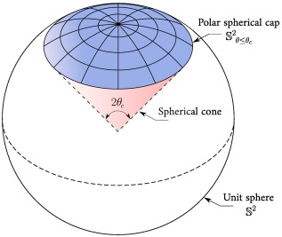
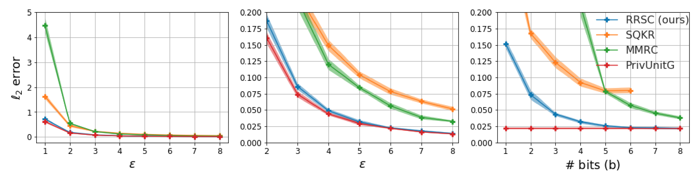

Differential Privacy
in Federated Learning
Local DP, optimal mean estimation under privacy & communication,
and a tour of recent DP-in-ML advances.
Based on the speaker's NeurIPS 2023 paper on exact optimality for
private mean estimation with shared randomness.
Agenda
Federated learning
& mean estimation
Why a simple sum is the heart of the problem.
Federated learning
Train a shared model across many clients without moving raw data off-device.
- Each client computes a local gradient.
- Clients upload gradients to the server.
- Server aggregates and updates the model.
- Server broadcasts the update back.
Raw data never leaves the device.
Three challenges in FL
Compression
Millions of clients × millions of parameters. Uplink bandwidth is the bottleneck — we must transmit with as few bits as possible.
Privacy
Gradients leak training data. We need a formal guarantee that the server cannot reconstruct any single user's contribution.
Utility
After we compress and privatize, the aggregate estimate still has to be accurate enough to train a useful model.
This talk focuses on the three-way tradeoff between these axes.
The core primitive: private mean estimation
Each of n clients holds a vector $x_{i} \in \mathbb{R}^{d}$ with $\|x_{i}\| \le 1$. The server wants
subject to three constraints:
- Compression — each message uses at most $b$ bits.
- Privacy — each message is $\varepsilon$-LDP.
- Utility — minimize $\mathbb{E}\|\hat\mu - \mu\|^2$ (MSE).
A gradient step is a mean of per-client gradients. Nail mean estimation and you nail DP-SGD in FL.
LDP vs. central DP
Different trust models, different achievable rates.
Differential privacy, in one line
A randomized mechanism $M$ is (ε, δ)-DP if for any two datasets $D, D'$ differing in one record, and any event $S$,
- Small $\varepsilon \Rightarrow$ output distribution barely changes when one person's data changes.
- Strong composition, post-processing immunity, group-privacy scaling.
- The where matters: is the mechanism run on raw data, or on each user's own device?
Local DP vs. central DP
Noise scales as $O(1/(n\varepsilon))$ — best utility, but requires trusting the aggregator.
Noise scales as $O(\sqrt{d}/(\sqrt{n}\,\varepsilon))$ — much worse; every outgoing message must itself be DP.
Local DP, formally
Under Local DP, each client $i$ independently runs its own randomized mechanism $Q(\cdot \mid x_i)$ satisfying
There is no trusted aggregator to average before adding noise. Every outgoing message must already be $\varepsilon$-LDP, so noise accumulates across users instead of cancelling.
When the aggregator itself is untrusted — or could be compelled to disclose data — central DP is not enough. LDP gives each user plausible deniability in isolation, before their message ever leaves the device.
LDP mean estimation — the minimax rate
Problem. Each of $n$ clients holds a vector $x_i \in \mathbb{R}^d$ with $\|x_i\| \le 1$. Client $i$ sends an $\varepsilon$-LDP message $Y_i = M(x_i)$; the server outputs
We measure quality by mean-squared error, $\mathbb{E}\|\hat\mu - \mu\|^2$, and take the worst case over inputs — the minimax MSE.
For $\ell_2$-bounded $x_i \in \mathbb{R}^d$,
Compare central DP: $\Theta\!\left(1/(n^2\varepsilon^2)\right)$. LDP pays an extra factor of $d$ (and $n$) — the price of no trusted aggregator.
The Gaussian mechanism is suboptimal for LDP
Natural first try: add isotropic Gaussian noise to each vector, $M(x) = x + \mathcal{N}(0,\sigma^2 I_d)$. It works well for central DP with bounded $\ell_2$ sensitivity, but under LDP it wastes privacy budget along directions that don't matter — MSE scales with $d/\varepsilon^2$, off by a factor linear in $d$ in the high-privacy regime.
PrivUnit: the right mechanism for LDP mean estimation
PrivUnit (Bhowmick et al., 2018). For input $v \in \mathbb{S}^{d-1}$ and $W \sim \mathrm{Uni}(\mathbb{S}^{d-1})$, $\mathrm{PrivUnit}(p, \gamma)$ has the following distribution (up to normalization):
- Pick $(p, \gamma)$ so the density ratio equals $e^{\varepsilon}$.
- Sample stays on $\mathbb{S}^{d-1}$ — no wasted Gaussian tails.
Asi, Feldman, Talwar (ICML 2022 Oral): PrivUnit achieves the exact optimal constant for $\ell_2$ LDP mean estimation — not just the right rate.

The missing axis: communication
PrivUnit is optimal — but its output is a continuous point on the sphere. To send it, you need many bits.
- Privacy alone: optimal is known (PrivUnit).
- Communication alone: optimal is known (randomized coding).
- Privacy + communication together? Open until recently.
We want a mechanism that is exactly optimal along all three axes simultaneously — and that only uses $b$ bits per user.
- SQKR — Chen, Kairouz, Özgür · NeurIPS 2020
- FT21 — Feldman, Talwar · ICML 2021
- MMRC — Shah, Chen, Ballé, Kairouz, Theis · AISTATS 2022
All match the right rate, but none are exactly optimal.
Exact optimality
under privacy & communication
NeurIPS 2023 · our main results.
Problem setup
Goal. Design an LDP mean-estimation protocol that jointly optimizes:
- Rate. Minimum bits per user.
- Utility. Minimum MSE on the aggregate.
- Privacy. Each message is ε-LDP.
Clients share a source of common randomness with the server (a public seed). This is free in practice and, as we'll see, very useful.
- $x_{i} \in S^{d-1}$
- Budget: $\varepsilon$ LDP, $b$ bits
- Shared seed $U$
- $\hat\mu$ minimizing $\mathbb{E}\|\hat\mu - \mu\|^2$
LDP with shared randomness
Shared randomness does not weaken privacy — the seed $U$ is public, so privacy is measured conditional on $U$.
- Client encoder: $m = f(x, U)$, at most $b$ bits.
- Server decoder: $\hat{v} = g(m, U)$.
- For every fixed $U$, the mapping $x \mapsto m$ must be $\varepsilon$-LDP.
Why it matters: a shared codebook lets every bit of the message carry information about the chosen direction, instead of being spent on noise.
Client
input $x \in \mathbb{S}^{d-1}$
$m = f(x, U)$
Server
$\hat{\mu} = g(m, U)$
Main Result I — Canonical protocols
Without loss of optimality, we may restrict attention to protocols of a very clean form:
- Single encoder. All n clients use the same randomized encoder.
- Single decoder. Server decodes each $Y_{i}$ separately, then averages.
- Unbiased. $\mathbb{E}[Dec(Y) | x] = x$.
Consequence: designing a good single-user scheme is enough. The n-user MSE then scales as $(1/n) \cdot Var_{single}$.
Reduces a hard distributed problem to optimizing one encoder–decoder pair with a variance objective.
Main Result II — Codebook-based schemes are optimal
For any canonical protocol $(f, g, P_U)$ that is unbiased and $\varepsilon$-LDP, there exists a codebook-based scheme $(f_0, g^{+}, P_{\tilde U^{M}})$ — compatible with any such $(f, g, P_U)$ — that achieves the same error.
- Codebook is drawn from the shared seed — known to client and server.
- Client sends a single index $m \in [M]$ — costs $\lceil \log_{2} M \rceil$ bits.
- Server returns the codeword at the received index.
Motivated from coding theory. The codebook plays the role of a channel code; the index $m$ identifies a codeword, and privacy is enforced at the encoder, not at the output.
Main Result III — Rotationally symmetric simplex codebook
Take a regular $(M{-}1)$-simplex $\{s_1, \ldots, s_M\}$ inscribed in $\mathbb{S}^{d-1}$:
Haar-rotate it onto the sphere in $\mathbb{R}^d$:
Main Result IV — k-closest encoding is optimal for RRSC
Under RRSC, the optimal encoder $Q_f(m \mid v, U^{M})$ is two-level:
- Density ratio $= e^{\varepsilon}$ — the encoder is $\varepsilon$-LDP.
- Just a top-$k$ query on the codebook; optimal $k = k(\varepsilon, M)$.
RRSC converges to PrivUnit in the limit
As $M \to \infty$, RRSC + $k$-closest $\longrightarrow$ PrivUnit.
- As $M$ grows, the rotated simplex vertices densify uniformly on $\mathbb{S}^{d-1}$.
- The top-$k$ codewords converge to a spherical cap around $v$; the rest cover the complement.
- The two-level mass keeps the density ratio at exactly $e^{\varepsilon}$ — which is PrivUnit.
A unified framework across prior works
Order-optimal rate
Chen, Kairouz, Özgür. Breaking the Communication-Privacy-Accuracy Trilemma. First matching-rate bounds using $\Theta(\varepsilon)$ bits with shared randomness.
Lossless compression
Feldman, Talwar. Lossless Compression of Efficient Private Local Randomizers. Simulating an LDP mechanism in $\Theta(\varepsilon)$ bits via channel simulation.
PrivUnit via importance sampling
Shah, Chen, Ballé, Kairouz, Theis. Optimal Compression of Locally DP Mechanisms. Minimal random coding — simulates PrivUnit with shared randomness.
Exact optimality
Isik, Chen, Özgür, Weissman, No. Exact Optimality of Communication-Privacy-Utility Tradeoffs in Distributed Mean Estimation. RRSC + k-closest matches the PrivUnit lower bound exactly, with finite bits.
All four fit the same canonical-protocol / codebook template — only the codebook and sampler change.
Experiments
RRSC is compared with SQKR, MMRC, and PrivUnitG on synthetic mean estimation over $\mathbb{S}^{d-1}$, varying $\varepsilon$, $b$, and $n$. RRSC matches PrivUnit utility at a small fraction of the bits.

Open question & conjecture
Is RRSC + k-closest exactly optimal among all canonical protocols, not just those using a rotationally-symmetric codebook?
Conjecture. Yes — any exactly-optimal finite-bit LDP mean-estimation protocol is equivalent, up to post-processing, to RRSC with some M.
- Extensions to heavy-tailed xᵢ and to shuffled DP are open.
- Adaptive M per round?
DP in modern ML
From mean estimation to realistic generative models.
From primitives to realistic models
The tools we just developed — clipping, private aggregation, careful accounting — plug directly into training pipelines for real models.
- DP-SGD is the workhorse: clip per-example gradients, add Gaussian noise, account the privacy cost.
- Recent line of work: make DP training viable for generative models that users actually care about.
- Key trick: leverage large public pre-training, then fine-tune privately on sensitive data.
- Bigger backbones absorb noise better.
- Public pre-training gives a strong prior.
- Better accountants (PRV, f-DP).
DP-Diffusion — private generative models via diffusion
Ghalebikesabi et al., 2023. Show that diffusion models can be trained with DP-SGD and still produce high-quality samples.
- Pretrain on public data → fine-tune on sensitive data with DP-SGD.
- Careful per-example gradient clipping over the noise-prediction loss at each diffusion step.
- State-of-the-art FID for DP image generation on CIFAR-10 and Camelyon17 at the time of publication.
DP-RDM — retrieval-augmented DP generation
Lebensold et al., 2024. Instead of fine-tuning the backbone with DP-SGD, make the retrieval step differentially private.
- Keep a public diffusion model frozen.
- Retrieve from a private datastore using a DP aggregation of retrieved embeddings.
- Gets strong sample quality without the cost of fully privatizing backbone training.
A natural place for LDP-style aggregation: the embedding average at retrieval time is exactly a mean-estimation problem.
DP-RDM — how the mechanism works
Private data only enters via the noisy aggregate $z$ — a mean of $k$ retrieved embeddings on a random subsample:
DP-RDM — intuition
Private data influences the output only through retrieval. Make that one channel DP and post-processing through a frozen $\phi$ stays DP — no DP fine-tuning of the backbone.
DP-SGD needs huge batches and retraining of a diffusion model from scratch. DP-RDM sidesteps this by freezing $\phi$ and spending privacy budget only on the retrieval mean.
$\lambda = 0$: rely only on the public neighbors $O_k$ — no privacy cost, domain adaptation loss. $\lambda \to 1$: rely fully on the noisy private $z$ — more adaptation, more noise. The SGM accountant composes the $(\alpha, \varepsilon)$ cost over queries.
Subsampling $q$ amplifies privacy; Gaussian noise $\sigma$ sets the RDP cost per query.
More recent progress — DP at realistic scale
Common thread: lean on public priors, spend the privacy budget where it matters most.